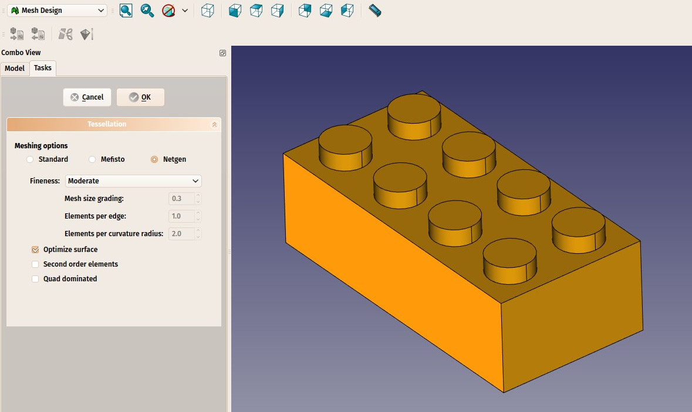
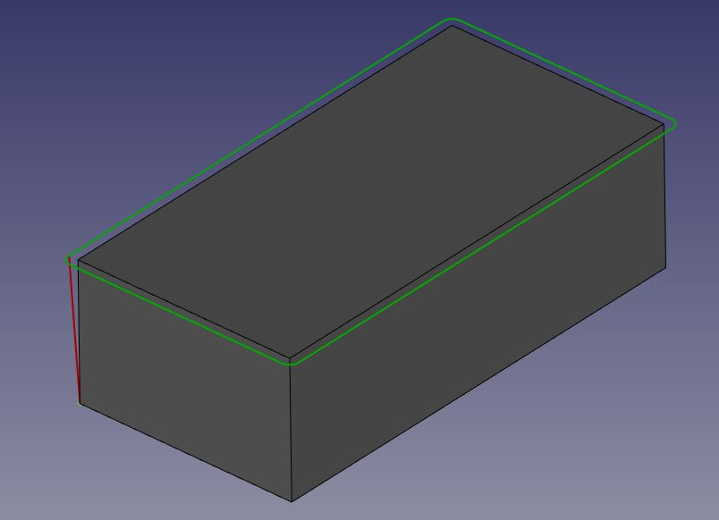
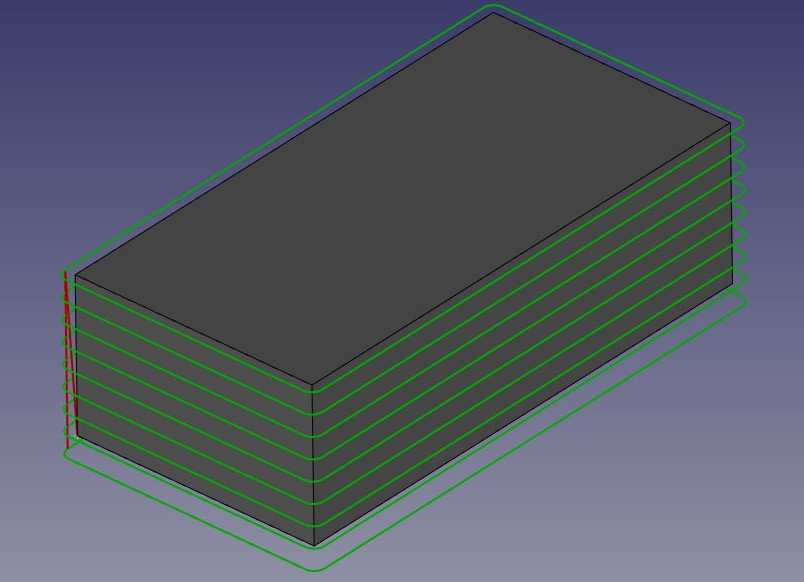

Manual:Preparing models for 3D printing/es
- Introducción
- Descubriendo FreeCAD
- Trabajar con FreeCAD
- Guiones en Python
- La comunidad
Uno de los propósitos principales de FreeCAD es diseñar objetos que puedan convertirse en productos físicos reales. Estos diseños pueden compartirse con otros para su fabricación o, cada vez más, exportarse directamente a 3D printers impresoras 3D o a CNC mill &CNC machines fresadoras CNC para su fabricación automatizada. Con FreeCAD, puede crear modelos precisos y detallados, listos para diversos métodos de producción. Este capítulo le guiará a través del proceso de preparación de sus modelos para estas máquinas, asegurándose de que cumplan con las especificaciones necesarias para una fabricación exitosa, ya sea que trabaje en equipo o gestione todo el proceso usted mismo.
Si ha tenido cuidado al modelar, la mayoría de los problemas asociados con la impresión 3D de su modelo ya deberían estar minimizados. Los aspectos clave en los que debe centrarse incluyen:
- Asegurando la solidez de sus objetos: Al igual que los objetos del mundo real, sus modelos 3D deben ser sólidos. FreeCAD, especialmente dentro del Entorno de trabajo PartDesign, le ayuda a garantizar que sus modelos permanezcan sólidos durante todo el proceso de diseño. El software le notificará si una operación compromete la solidez del objeto. Además, el Entorno de trabajo Part ofrece una herramienta
 Check Geometry, que le permite identificar posibles defectos o problemas que podrían interferir con el proceso de impresión 3D.
Check Geometry, que le permite identificar posibles defectos o problemas que podrían interferir con el proceso de impresión 3D.
Confirmación de la exactitud de las dimensiones: La precisión es fundamental: lo que diseñe en FreeCAD se traducirá directamente en medidas del mundo real. Un milímetro en FreeCAD equivale a un milímetro en el objeto físico, por lo que cada dimensión debe considerarse y verificarse cuidadosamente para garantizar su exactitud.
- Gestión de la degradación: Es importante recordar que ninguna impresora 3D ni fresadora CNC puede procesar directamente archivos FreeCAD. Estas máquinas utilizan G-Code, un lenguaje de máquina con varios dialectos según la máquina o el fabricante. El proceso de conversión del modelo a G-Code suele realizarse automáticamente mediante software de laminado, pero también se puede hacer manualmente para un mayor control. Sin embargo, durante esta conversión, es inevitable cierta pérdida de detalle o calidad, especialmente al convertir el modelo a un formato de malla para impresión. Es fundamental asegurarse de que esta degradación se mantenga dentro de límites aceptables y no afecte a la funcionalidad ni la apariencia del objeto final.
- Compatibilidad con formatos de exportación: Para la impresión 3D, el formato más utilizado es el STL, que de manera inherente convierte el modelo en una malla de triángulos, lo que puede producir cierta pérdida de detalle. Es fundamental elegir la resolución adecuada al exportar a STL, buscando un equilibrio entre la conservación del detalle y el tamaño del archivo. Análogamente, para el mecanizado CNC, es preferible usar formatos como STEP o IGES, ya que mantienen mejor la integridad geométrica original del diseño que le formato STL. Elegir el formato correcto garantiza que la conversión a código G sea precisa.
- Análisis y calibración de malla: Antes de exportar el modelo a un programa de laminado o generador de trayectorias CNC, es recomendable realizar un análisis de malla con Mesh Workbench de FreeCAD con el objeto de detectar irregularidades, bordes no colectores u otros problemas de malla que puedan complicar el proceso de fabricación. Además, incluso con un modelo perfecto, asegúrese de que su impresora 3D o máquina CNC esté correctamente calibrada (por ejemplo, para la nivelación de la base, la configuración del motor paso a paso o la configuración del extrusor) para evitar problemas de calidad en el producto final.
En las siguientes secciones, asumiremos que ya ha creado modelos sólidos con las dimensiones correctas. Nos centraremos ahora en gestionar el proceso de conversión a código G, garantizando que su modelo mantenga la calidad necesaria para la impresión 3D o el mecanizado CNC. Al tener en cuenta estos aspectos, estará mejor preparado para producir directamente objetos físicos de calidad a partir de sus modelos de FreeCAD.
Exportación a slicers
La técnica más común para preparar un modelo 3D creado para impresión consiste en exportar el objeto 3D desde FreeCAD a un software especializado conocido como laminador. El laminador genera código G dividiendo el modelo en capas finas, que la impresora 3D seguirá para construir el objeto capa a capa. Dado que muchas impresoras 3D, especialmente las de fabricación casera o para aficionados, tienen configuraciones únicas, los programas de laminado ofrecen una amplia gama de ajustes avanzados. Estos ajustes permiten personalizar parámetros clave, como la altura de capa, la velocidad de impresión, la densidad de relleno y las estructuras de soporte, asegurando que el código G se adapte a las características y capacidades específicas de la impresora.
Muchos programas de laminado también ofrecen funciones de simulación y validación de impresión que resultan de gran valor para previsualizar el proceso de impresión. Puede visualizar la trayectoria de la herramienta para cada capa, lo que ayuda a detectar posibles problemas como voladizos que podrían requerir soportes o áreas donde la refrigeración podría ser insuficiente. Esta validación previa a la impresión garantiza que su modelo esté correctamente preparado antes de que comience la impresión, evitando impresiones fallidas o desperdicio de material.
Los programas de laminado suelen incluir información adicional, como la estimación del tiempo de impresión, el consumo de material y el coste en función del filamento o la resina utilizados. Esto permite tomar decisiones fundamentadas sobre el proceso de impresión y ajustar la configuración para optimizar la eficiencia o ahorrar material. Si bien los aspectos más complejos de la impresión 3D, como la calibración de la máquina, la selección de materiales y el posprocesamiento, quedan fuera del alcance de esta guía, nos centraremos en cómo exportar correctamente el modelo de FreeCAD y utilizar el software de laminado para garantizar que el resultado sea correcto y esté optimizado para la impresora específica.
Convertir objetos en mallas
Ninguno de los programas de laminado disponibles actualmente puede aceptar directamente la geometría sólida generada en FreeCAD. Programas como Cura y PrusaSlicer trabajan con formatos basados en mallas poligonales (como STL, OBJ o 3MF), que representan la geometría de la superficie del objeto mediante una red de triángulos. Por lo tanto, para utilizar un modelo creado en FreeCAD, primero debe convertirse a un formato de malla que estos programas puedan interpretar.
El formato más utilizado para la impresión 3D es STL. Una de las razones por las que se prefiere usar STL es su simplicidad: representa la geometría 3D como una malla de triángulos sin incluir detalles complejos como colores, materiales o texturas. Este enfoque minimalista garantiza que los archivos STL sean ligeros y compatibles con prácticamente todos los programas de laminado e impresoras 3D, lo que lo convierte en el estándar de la industria. Si bien, también se admiten OBJ y 3MF, estos pueden contener información adicional como texturas y materiales, lo cual es innecesario para la mayoría de las tareas de impresión 3D y puede complicar el proceso de laminado.
Afortunadamente, convertir un objeto sólido en una malla en FreeCAD es sencillo, aunque convertir una malla de nuevo en un sólido es una operación más compleja. Durante el proceso de conversión, es fundamental tener en cuenta que puede producirse cierta degradación de la calidad del modelo, especialmente al reducir geometrías complejas a una malla triangular simple. Debe asegurarse de que esta degradación se mantenga dentro de límites aceptables para conservar la precisión del objeto impreso.

{kind=link}
- Vamos a convertir la pieza de Lego que creamos en el capítulo anterior en una malla STL. La geometría se puede descargar al final de dicho capítulo.
- Abra el archivo de FreeCAD que contiene la pieza de Lego.
- Cambie al Mesh Workbench
- Seleccione el ladrillo de Lego.
- Seleccione el menú Mallas → Crear malla a partir de forma.
- Se abrirá un panel de tareas con varias opciones. Algunos algoritmos de mallado adicionales (Mefisto o Netgen) podrían no estar disponibles, dependiendo de cómo se haya compilado su versión de FreeCAD. El algoritmo de mallado estándar siempre estará presente. Ofrece menos posibilidades que los otros dos, pero es totalmente suficiente para objetos pequeños que se ajusten al tamaño máximo de impresión de una impresora 3D.
{kind=link}
- Seleccione el generador de malla Estándar y deje el valor de desviación en el valor predeterminado de 0.10. Pulse Aceptar.
- Se creará un objeto de malla justo encima del objeto sólido. Puede ocultar el sólido o mover uno de los objetos a un lado para compararlos.
- Cambie la propiedad Ver → Modo de visualización del nuevo objeto de malla a Líneas planas para observar cómo se realizó la triangulación.
- Si no está satisfecho y considera que el resultado es demasiado tosco, puede repetir la operación reduciendo el valor de desviación. En el ejemplo siguiente, la malla de la izquierda utiliza el valor predeterminado de 0.10, mientras que la de la derecha utiliza 0.01:
{kind=link}
Sin embargo, en la mayoría de los casos, los valores por defecto darán un resultado satisfactorio.
- Ahora podemos exportar nuestra malla a un formato de malla, como STL, que es actualmente el formato más utilizado en la impresión 3D, utilizando el menú Archivo → Exportar y eligiendo el formato de archivo STL.
En FreeCAD, el Entorno de Trabajo de Malla ofrece varios algoritmos para convertir un modelo sólido en una malla, incluyendo Estándar, Mefisto, Netgen y Gmsh. El algoritmo Estándar se usa comúnmente para objetos pequeños y medianos, ya que proporciona un equilibrio entre velocidad y calidad de la malla. Al crear una malla, dos parámetros críticos son la desviación de superficie y la desviación angular. La desviación de superficie controla la fidelidad con la que la malla sigue la geometría original; valores menores proporcionan una malla más fina y precisa, pero pueden generar archivos de mayor tamaño. La desviación angular define la desviación permitida en función de los cambios en los ángulos del modelo, especialmente para curvas y bordes afilados. Otras opciones, como la desviación de superficie relativa, permiten ajustar la precisión dinámicamente según la escala del modelo, y funciones como la aplicación de colores a las caras o la definición de segmentos de malla por color son útiles para renderizado avanzado o para agrupar diferentes regiones del modelo. Una vez generada la malla, se puede exportar en formatos como STL, OBJ o 3MF, esenciales para preparar modelos para impresión 3D. La calidad de la malla es crucial para garantizar que las impresoras 3D interpreten correctamente el modelo, por lo que seleccionar el algoritmo de mallado y la configuración de desviación adecuados puede afectar significativamente el resultado final de la impresión.
Usando Slic3r
PrusaSlicer [1] es una aplicación que convierte objetos STL, OBJ y 3MF en código G que se puede enviar directamente a impresoras 3D. Al igual que FreeCAD, es gratuito, de código abierto y está disponible para Windows, Mac OS y Linux. Aunque fue desarrollado por Prusa Research y optimizado para impresoras 3D Prusa, PrusaSlicer se puede usar con casi cualquier impresora 3D, lo que lo hace versátil para una amplia gama de máquinas. PrusaSlicer se basa en Slic3r, el software de laminado original, pero con mejoras significativas y actualizaciones más frecuentes. Slic3r ya no se actualiza activamente, mientras que PrusaSlicer continúa evolucionando, agregando nuevas funciones como alturas de capa adaptativas, soportes de árbol y estrategias de impresión mejoradas.
Configurar correctamente un programa de laminado para impresión 3D es un proceso complejo que requiere un buen conocimiento de las capacidades de la impresora 3D. Si bien, generar código G sin este conocimiento, podría resultar en un archivo que no funcione bien en otras impresoras. PrusaSlicer ofrece una excelente manera de verificar que su archivo STL tenga el formato correcto y sea imprimible. Las funciones de simulación del programa le permiten previsualizar las trayectorias del código G y comprobar si hay algún problema de impresión antes de comenzar la impresión real.
Este es nuestro archivo STL exportado y abierto en PrusaSlicer. Con solo pulsar el botón "Cortar", el software divide el modelo en capas, genera las trayectorias de impresión para la impresora 3D y aplica la velocidad y la temperatura necesarias. Calcula el relleno, las estructuras de soporte y los perímetros, y luego crea el código G, que contiene instrucciones detalladas para la impresora. Puede previsualizar el modelo cortado capa por capa, comprobar el tiempo de impresión estimado y el consumo de filamento, y finalmente guardar o enviar el código G a la impresora para el proceso de impresión.
{kind=link}
Además de PrusaSlicer, existen varias otras opciones de software de laminado disponibles para impresión 3D. Cura, desarrollado por Ultimaker, es uno de los laminadores de código abierto más populares y admite una amplia gama de impresoras con una amplia personalización. Simplify3D es un laminador de pago conocido por sus funciones avanzadas y la generación eficiente de trayectorias de herramientas. MatterControl es un laminador de código abierto que también incluye herramientas CAD básicas, mientras que IdeaMaker ofrece una interfaz fácil de usar con alturas de capa adaptativas, desarrollado por Raise3D. Por último, [2], una opción de código abierto más reciente basada en PrusaSlicer y Bambu Studio, ofrece funciones adicionales para diversas impresoras. Cada programa de laminado tiene sus propias ventajas, por lo que la mejor opción dependerá del modelo de impresora y de los requisitos de impresión específicos.
Generating G-code
El  CAM Workbench en FreeCAD proporciona opciones avanzadas para generar código G directamente para máquinas CNC, ofreciendo mayor flexibilidad y control en comparación con las herramientas de laminado automático como las utilizadas para la impresión 3D. Mientras que los laminadores de impresión 3D pueden convertir automáticamente un modelo en código G con una mínima intervención, el fresado CNC requiere mucha más participación del usuario para garantizar un control preciso sobre las trayectorias de la herramienta, las velocidades, las profundidades y otros parámetros de mecanizado. Esto hace que CAM Workbench sea esencial para tareas que exigen un código G ajustado con precisión, especialmente para el fresado CNC, donde la complejidad de la máquina y la variedad de operaciones (como corte, perforación y contorneado) requieren una planificación cuidadosa.
CAM Workbench en FreeCAD proporciona opciones avanzadas para generar código G directamente para máquinas CNC, ofreciendo mayor flexibilidad y control en comparación con las herramientas de laminado automático como las utilizadas para la impresión 3D. Mientras que los laminadores de impresión 3D pueden convertir automáticamente un modelo en código G con una mínima intervención, el fresado CNC requiere mucha más participación del usuario para garantizar un control preciso sobre las trayectorias de la herramienta, las velocidades, las profundidades y otros parámetros de mecanizado. Esto hace que CAM Workbench sea esencial para tareas que exigen un código G ajustado con precisión, especialmente para el fresado CNC, donde la complejidad de la máquina y la variedad de operaciones (como corte, perforación y contorneado) requieren una planificación cuidadosa.
En CAM Workbench, la generación de trayectorias de código G es altamente personalizable. Incluye herramientas para generar trayectorias completas para diversas operaciones o, alternativamente, se pueden crear segmentos parciales de código G y ensamblarlos para formar una operación de fresado completa. Este enfoque modular permite adaptar cada paso del proceso de mecanizado, optimizando las trayectorias de la herramienta para lograr eficiencia, adaptarse al tipo de material y a las capacidades específicas de la máquina.
El proceso CAM es, sin duda, mucho más complejo que la impresión 3D, ya que las máquinas CNC utilizan herramientas diferentes y deben tener en cuenta la eliminación de material, la geometría de la herramienta y los márgenes de seguridad, todo ello configurado manualmente. En FreeCAD, crear un proyecto CAM sencillo requiere definir trayectorias de herramienta, ajustar las profundidades de corte, seleccionar las herramientas adecuadas y configurar los desplazamientos, avances y velocidades de trabajo. A diferencia del software de laminado, que gestiona la mayor parte de esto automáticamente, el entorno de trabajo CAM pone el control en tus manos, lo que lo hace altamente personalizable, pero también bastante más complejo.

{kind=link}
- Cargue el archivo que contiene nuestra pieza de Lego y cambie a
 CAM Workbench.
CAM Workbench.
- Pulse el botón
 Job y seleccione nuestra pieza de Lego.
Job y seleccione nuestra pieza de Lego.
- Dado que esta sección no pretende ofrecer un tutorial exhaustivo del CAM Workbench, utilizaremos los valores predeterminados.
Si desea un tutorial más detallado, consulte CAM walk-through. Tenga en cuenta que en el CAM Workbench se crea automáticamente un cuerpo base alrededor del objeto, que representa la materia prima que se mecanizará. Inicialmente, este cuerpo base se extiende 1 mm en todas las direcciones desde el objeto.
{kind=link}
El primer paso consiste en eliminar el material sobrante alrededor del objeto. En esta etapa, partimos de un bloque sólido de materia prima y debemos tallar la pieza de Lego a partir de este bloque. Este proceso implica definir las trayectorias de la herramienta que irán eliminando gradualmente el material sobrante, dejando la forma deseada de la pieza de Lego.
La siguiente imagen muestra la configuración de FreeCAD CAM Workbench para el mecanizado de un bloque de Lego. El árbol del modelo incluye operaciones de modelado sólido como Pad, Pocket y LinearPattern, que se utilizaron para dar forma a la pieza. Se crea un trabajo que contiene trayectorias de herramienta en Operaciones que definen cómo se eliminará el material del material base. Se selecciona la herramienta predeterminada para el mecanizado y el Cuerpo del modelo representa la pieza 3D en la que se está trabajando. Esta configuración prepara el objeto para generar el código G que controlará la máquina CNC.

{kind=link}
{kind=link}
Antes de comenzar a eliminar el material sobrante, ajustemos la fresadora. Si bien CAM Workbench permite definir herramientas personalizadas, para simplificar, modificaremos la herramienta predeterminada. Esto garantizará que la configuración esté optimizada para nuestro proyecto sin necesidad de crear una herramienta nueva desde cero.
- Haga clic en el texto TC:Default Tool. Esto abrirá el Editor de controlador de herramientas. Modifique las velocidades de avance y de husillo como se muestra en la imagen. Las velocidades de avance para el corte horizontal y vertical están configuradas en 2000 mm/min, mientras que la velocidad de husillo está configurada en 2000 RPM con rotación hacia adelante. Estos ajustes controlan el movimiento y la velocidad de corte de la herramienta durante el proceso de mecanizado.
{kind=link}
- Haga doble clic en la herramienta y cambie su diámetro a 1 mm.
- Ahora estamos listos para comenzar a eliminar el material sobrante del bloque, esculpiendo gradualmente la geometría de Lego. Este proceso utilizará las trayectorias de herramienta que definimos, asegurando que la forma final coincida con el diseño previsto.
- Haga clic en
 Profile. Esta opción se utiliza para esculpir el material innecesario alrededor del perímetro de la pieza, dando forma a los límites exteriores para lograr las dimensiones generales de la pieza de Lego.
Profile. Esta opción se utiliza para esculpir el material innecesario alrededor del perímetro de la pieza, dando forma a los límites exteriores para lograr las dimensiones generales de la pieza de Lego.
- Normalmente no tendrá que cambiar ninguno de los valores predeterminados, excepto el Extra Offset ubicado en la pestaña Operación. Establezca esta opción en 1 mm para asegurar que el objeto restante corresponda correctamente a los límites de Lego.
- Una vez que presione Aplicar, podrá ver las líneas verdes alrededor del objeto. Estas líneas visualizan la trayectoria que seguirá nuestro objeto de corte al cortar el bloque inicial.
- El archivo STL generado en este ejercicio: https://github.com/yorikvanhavre/FreeCAD-manual/blob/master/files/lego.stl
- El archivo generado en este ejercicio: https://github.com/yorikvanhavre/FreeCAD-manual/blob/master/files/path.FCStd
- El archivo de G-code generado en este ejercicio: https://github.com/yorikvanhavre/FreeCAD-manual/blob/master/files/lego.gcode
- Nuestro siguiente paso es crear los 6 cilindros extruidos en la parte superior del bloque de Lego.
- Seleccione la cara superior y haga clic en el botón
 Pocket Shape. En la pestaña «Extensiones», active la opción «Extensiones» y haga clic en el borde de la cara superior (normalmente debería añadirse automáticamente en el cuadro de longitud predeterminado).
Pocket Shape. En la pestaña «Extensiones», active la opción «Extensiones» y haga clic en el borde de la cara superior (normalmente debería añadirse automáticamente en el cuadro de longitud predeterminado). - Finalmente, en la pestaña «Operación», introduzca -1,5 mm en el cuadro «Extensión de pasada» y cambie la opción de patrón a ZigZagOffset.
- Pulse «Aplicar» y cierre la pestaña.
- De forma similar, podemos crear los tres cilindros de la parte inferior de la pieza de Lego.
- Podemos visualizar fácilmente los pasos seguidos durante el fresado del objeto utilizando la opción
 SimulatorGL.
SimulatorGL.
Descargas
- Archivo STL generado en este ejercicio: https://github.com/yorikvanhavre/FreeCAD-manual/blob/master/files/lego.stl
- Archivo generado durante este ejercicio: https://github.com/yorikvanhavre/FreeCAD-manual/blob/master/files/path.FCStd
- Archivo G-code generado en este ejercicio: https://github.com/yorikvanhavre/FreeCAD-manual/blob/master/files/lego.gcode
Read more
Videos
- Cómo usar FreeCAD para la impresión 3D | Usando la rama Realthunder. Una lista de reproducción de vídeos de Maker Tales sobre cómo utilizar FreeCAD para la impresión 3D.